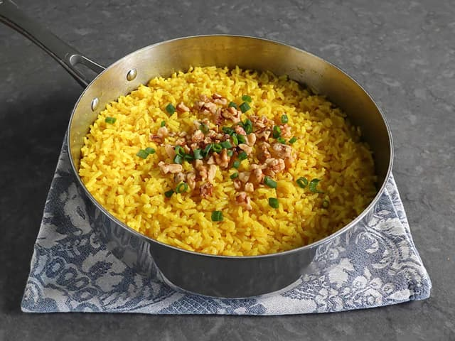

Golden Butter Rice

This golden butter rice, flavored with ginger and turmeric, is a forgotten way of cooking butter rice. It isn't cooked rice with butter stirred in, it really is rice cooked in butter.
Ingredients:
- Unsalted butter
- Finely grated fresh ginger
- Ground turmeric
- Cayenne pepper
- Brown sugar
- Fine salt
- Basmati rice
- Water
- Walnuts
- Green onions
Steps:
- Melt butter in a pan or pot with a tight-fitting lid over medium heat. As soon as butter starts to bubble, add in ginger, turmeric, cayenne, brown sugar, and salt. Cook, whisking, for 1 minute.
- Add rice, and stir until every grain is coated with butter. Stir in water, and bring to a boil over high heat. As soon as it begins to boil, gently shake and swirl the pan to settle rice into an even layer, then reduce heat to medium-low.
- Cover tightly and simmer for 15 minutes. Turn off heat, and let rest, covered, for 10 minutes. DO NOT lift the lid or try to stir yet.
- Now, remove the lid and use a fork to fluff and separate rice grains. Season to taste, and serve immediately, garnished with walnuts and green onions.